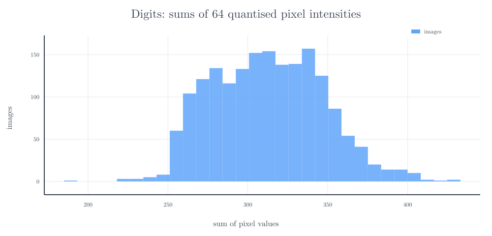
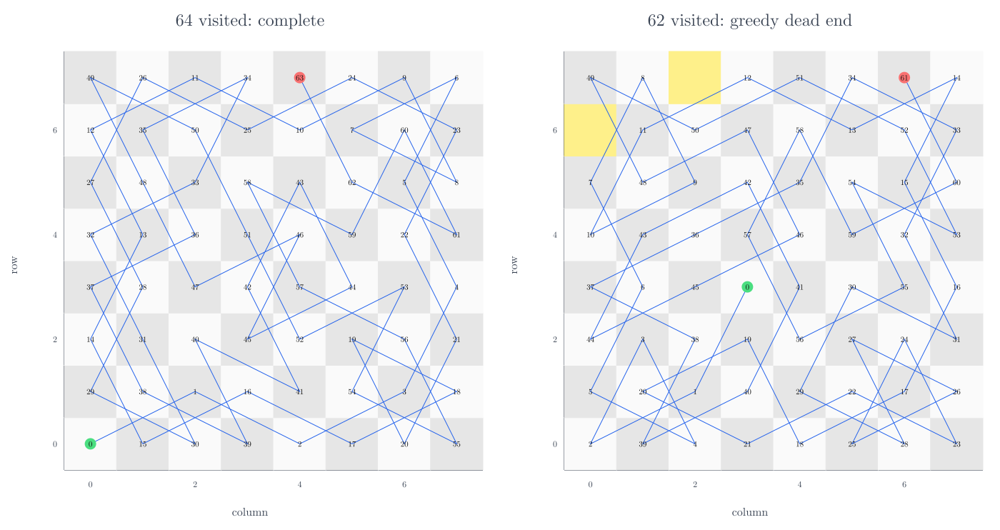
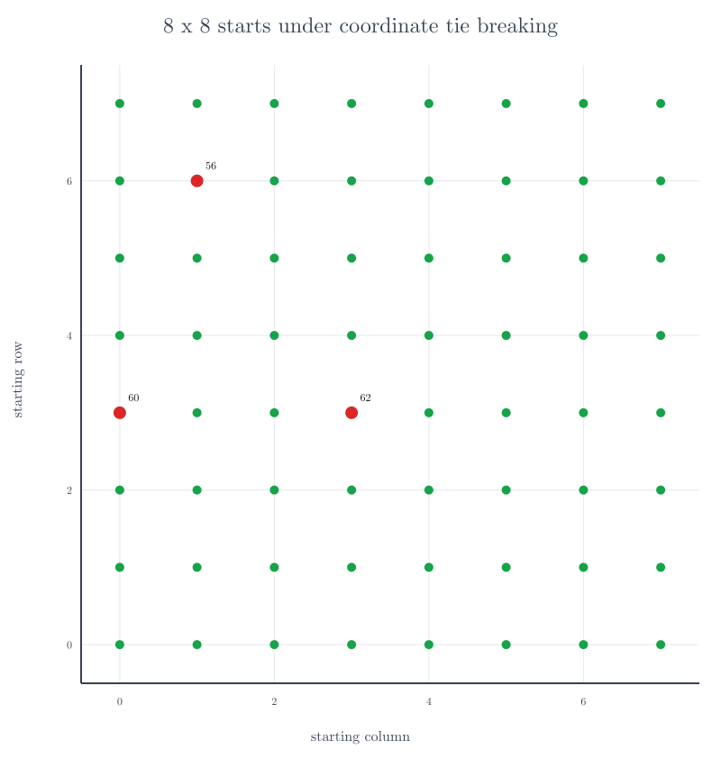
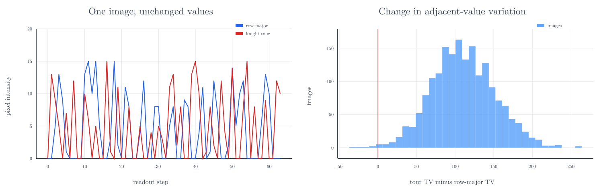

Warnsdorff's Rule: A Fast Knight Tour Is Still a Heuristic
Abstract
Warnsdorff's rule extends a knight path towards the unvisited neighbour with the
fewest onward moves. We derive its local choice and linear work bound on a
rectangular board, while distinguishing a valid path from a complete or closed
tour. The exact coordinate tie policy completes 61 of 64 starts on an 8 by 8
board; retained failure prefixes explain what the older complete-or-empty API
concealed. A completed tour then reorders the 64 measurements of each image in
dm::datasets::digits(). Pixel values and sums are preserved, but
adjacent-value variation changes: a geometric coverage heuristic does not
optimise image smoothness.
The data: numeric images on an 8 by 8 grid
The built-in digits frame contains 1797 handwritten images, each with 64 integer
measurements between zero and sixteen and an original digit label. Pixel columns
are stored in row-major order. Remove digit when forming a grid: the class
label is not a sixty-fifth pixel. No model is fitted to the labels in this
report; they are used only for descriptive grouping. The tour used below is
fixed by board geometry and its start, independently of every image's values.
#include <dm/dm.hpp>
int main() {
const auto digits = dm::datasets::digits();
auto columns = digits.columns();
columns.erase(std::remove(columns.begin(), columns.end(), "digit"),
columns.end());
std::print("{}\n",
digits.select({"digit", "pixel_0", "pixel_27", "pixel_28"}).head(
6).to_md());
auto summary =
dm::algorithms::knight_tour_grid_summary(digits, columns,
dm::algorithms::warnsdorff_attempt(8, 8));
summary.add_column("digit", digits.get_column("digit").values());
std::print("\n{}\n",
(summary | dm::group_by("digit") |
dm::summarise(dm::agg::n("images"),
dm::agg::mean("value_sum", "mean_total_intensity"),
dm::agg::sd("value_sum", "sd_total_intensity"))).to_md(4));
std::filesystem::create_directories("build");
dm::graphics::RPlot::hist(summary.get_column("value_sum").values(), 30,
"images").title("Digits: sums of 64 quantised pixel intensities").x_label("sum of pixel values").y_label("images").size(1000, 480).save_svg("build/warnsdorff_data.svg");
}| digit | pixel_0 | pixel_27 | pixel_28 |
|---|---|---|---|
| 0 | 0 | 0 | 0 |
| 1 | 0 | 16 | 16 |
| 2 | 0 | 6 | 15 |
| 3 | 0 | 15 | 11 |
| 4 | 0 | 15 | 0 |
| 5 | 0 | 16 | 16 |
| digit | images | mean_total_intensity | sd_total_intensity |
|---|---|---|---|
| 0 | 178 | 316.9382 | 37.6591 |
| 1 | 182 | 313.2253 | 45.4953 |
| 2 | 177 | 313.9322 | 29.6578 |
| 3 | 183 | 306.8361 | 32.8842 |
| 4 | 181 | 310.7127 | 26.7649 |
| 5 | 182 | 307.2253 | 29.4461 |
| 6 | 181 | 311.2486 | 34.0467 |
| 7 | 179 | 303.2905 | 29.5548 |
| 8 | 174 | 329.9310 | 34.2359 |
| 9 | 180 | 313.2889 | 34.9816 |

The method: prefer the most constrained next square
The board is a graph with one vertex per cell and an edge for each legal knight displacement \((\pm1,\pm2)\) or \((\pm2,\pm1)\). Let \(S_t\) be the cells already visited, including the current cell \(v_t\). Legal candidates and their onward degrees are
A low-degree candidate has few alternatives and may become inaccessible if deferred. That motivates the rule, but it is a local preference rather than a proof that the remaining graph can still be covered. This implementation breaks ties by the lowest row and then lowest column. It does not use random choices, a secondary lookahead, restarts or backtracking. The tie convention is part of the algorithm being measured.
The path stays legal and repeat-free by induction: the start is valid, and each
extension chooses a legal unvisited neighbour before marking it. If its length
reaches \(N=RC\), those distinct cells are a permutation of the board. A
complete path need not have a legal final-to-first edge; closed checks that
additional condition. At a dead end, the current prefix has no extension, which
does not establish impossibility from the original starting square.
Seeing successful and failed attempts
warnsdorff_attempt() retains the valid prefix and actual decision trace. The
original warnsdorff_knight_tour() uses the same loop and still returns an
empty vector on failure. The following two starts exhibit that difference. The
first step has two candidates of onward degree five; coordinate ties select row
one, column two.
#include <dm/dm.hpp>
int main() {
auto layout = dm::graphics::RLayout::create(1, 2);
std::print("| start row | start column | visited | complete | closed | candidate probes | onward probes |\n" "| ---: | ---: | ---: | :--- | :--- | ---: | ---: |\n");
for (const auto start : {std::pair<int, int>{0, 0}, {3, 3}}) {
const auto attempt =
dm::algorithms::warnsdorff_attempt(8, 8, start.first, start.second);
std::print("| {} | {} | {} | {} | {} | {} | {} |\n", start.first,
start.second, attempt.path.size(), attempt.completed,
attempt.closed, attempt.candidate_probes,
attempt.degree_probes);
layout.add(dm::algorithms::plot_knight_tour(attempt).title(
std::format("{} visited: {}", attempt.path.size(),
attempt.completed ? "complete"
: "greedy dead end")).size(700, 742));
}
std::print("\nFirst decisions from (0,0):\n\n{}\n",
dm::algorithms::warnsdorff_attempt(8, 8).trace.head(8).to_md());
std::print("\nLast decisions from (3,3):\n\n{}\n",
dm::algorithms::warnsdorff_attempt(8, 8, 3, 3).trace.tail(
3).to_md());
std::filesystem::create_directories("build");
layout.size(1400, 742).save_svg("build/warnsdorff_attempts.svg");
}| start row | start column | visited | complete | closed | candidate probes | onward probes |
|---|---|---|---|---|---|---|
| 0 | 0 | 64 | true | false | 504 | 1344 |
| 3 | 3 | 62 | false | false | 496 | 1336 |
First decisions from (0,0):
| step | row | column | legal_moves | minimum_degree | ties | selected_row | selected_column | action |
|---|---|---|---|---|---|---|---|---|
| 0 | 0 | 0 | 2 | 5 | 2 | 1 | 2 | move |
| 1 | 1 | 2 | 5 | 3 | 2 | 0 | 4 | move |
| 2 | 0 | 4 | 3 | 3 | 1 | 1 | 6 | move |
| 3 | 1 | 6 | 3 | 3 | 1 | 3 | 7 | move |
| 4 | 3 | 7 | 3 | 5 | 1 | 5 | 6 | move |
| 5 | 5 | 6 | 5 | 1 | 1 | 7 | 7 | move |
| 6 | 7 | 7 | 1 | 5 | 1 | 6 | 5 | move |
| 7 | 6 | 5 | 5 | 3 | 2 | 5 | 7 | move |
Last decisions from (3,3):
| step | row | column | legal_moves | minimum_degree | ties | selected_row | selected_column | action |
|---|---|---|---|---|---|---|---|---|
| 59 | 4 | 5 | 1 | 1 | 1 | 5 | 7 | move |
| 60 | 5 | 7 | 1 | 0 | 1 | 7 | 6 | move |
| 61 | 7 | 6 | 0 | -1 | 0 | -1 | -1 | stuck |

There are at most eight candidate directions and eight onward directions per candidate. A decision therefore makes at most 72 direction probes. There are at most \(N-1\) decisions, including any terminal stuck check, so the recorded selection work satisfies
The scan takes \(O(RC)\) time and \(O(RC)\) storage for visited flags, path and diagnostics. The counters measure those direction checks, not elapsed time or plotting work. Dimensions and cell budgets are checked before allocation, and coordinate arithmetic avoids signed overflow.
Starting-square sensitivity and a colour constraint
A knight move flips the parity of row plus column. Any complete path must therefore alternate the board's two colours. On a 5 by 5 board one colour has 13 cells and the other 12; a 25-vertex alternating path must start and end in the larger colour. A minority-colour start is impossible regardless of heuristic. This necessary condition alone says nothing conclusive about other starts.
#include <dm/dm.hpp>
int main() {
std::print("| board | starts | completed paths | closed tours |\n| :--- | ---: | ---: | ---: |\n");
for (const int n : {5, 6, 8}) {
const auto profile = dm::algorithms::warnsdorff_start_profile(n, n);
const auto counts =
profile |
dm::summarise(dm::agg::sum("completed", "complete"),
dm::agg::sum("closed", "closed"));
std::print("| {} x {} | {} | {} | {} |\n", n, n, profile.nrows(),
counts.double_at("complete", 0),
counts.double_at("closed", 0));
}
std::print("\n5 by 5, by starting colour:\n\n{}\n",
(dm::algorithms::warnsdorff_start_profile(5, 5) |
dm::group_by("colour") |
dm::summarise(dm::agg::n("starts"),
dm::agg::sum("completed", "complete"))).to_md());
const auto profile = dm::algorithms::warnsdorff_start_profile(8, 8);
const auto good = profile.filter([](const auto &r) {
return r.get_double("completed") != 0;
});
const auto bad = profile.filter([](const auto &r) {
return r.get_double("completed") == 0;
});
std::print("\nFailed 8 by 8 starts:\n\n{}\n",
bad.select({"start_row", "start_column", "visited_cells"}).to_md());
auto plot = dm::graphics::RPlot::create();
plot.points(good.get_column("start_column").values(),
good.get_column("start_row").values(), "", dm::RGB{22, 163, 74},
5).points(bad.get_column("start_column").values(),
bad.get_column("start_row").values(), "",
dm::RGB{220, 38, 38}, 7);
for (std::size_t i = 0; i < bad.nrows(); ++i)
plot.text(bad.double_at("start_column", i) + 0.18,
bad.double_at("start_row", i) + 0.2,
std::format("{:.0f}", bad.double_at("visited_cells", i)),
dm::RGB{15, 15, 15}, 12);
std::filesystem::create_directories("build");
plot.title("8 x 8 starts under coordinate tie breaking").x_label(
"starting column").y_label("starting row").x_limits(-0.5, 7.5).y_limits(
-0.5, 7.5).size(800, 842).save_svg("build/warnsdorff_starts.svg");
}| board | starts | completed paths | closed tours |
|---|---|---|---|
| 5 x 5 | 25 | 10 | 0 |
| 6 x 6 | 36 | 36 | 3 |
| 8 x 8 | 64 | 61 | 6 |
5 by 5, by starting colour:
| colour | starts | complete |
|---|---|---|
| 0 | 13 | 10 |
| 1 | 12 | 0 |
Failed 8 by 8 starts:
| start_row | start_column | visited_cells |
|---|---|---|
| 3 | 0 | 60 |
| 3 | 3 | 62 |
| 6 | 1 | 56 |

The 8 by 8 profile contains six closed tours. Rotating the vertex order of any such cycle yields a valid complete tour starting at any square. Thus all 64 starts have a solution, even though this greedy policy fails at three of them. Its coordinate tie rule also breaks geometric symmetry: rotating a start need not rotate the algorithm's choices. Results from a fixed move-order tie rule or a randomised rule need not equal this table. Enumerating all starts costs \(O((RC)^2)\), so that helper has a separate explicit start-count limit.
Applying the complete path as a pixel permutation
For image vector \(v\), let \(\pi_i\) be the row-major index of the \(i\)-th visited cell. A complete path gives a permutation matrix \(P\) and readout \(u_i=v_{\pi_i}\). Since every original cell appears once,
The actual coordinate mapping also gives an inverse: put each readout value back at its recorded row-major index. No image value is averaged or lost. The helper checks actual legality, uniqueness and coverage before applying the path; a partial prefix is rejected instead of silently dropping unvisited pixels. In generic floating-point data, reordered sums can differ by roundoff. These small integer intensities sum exactly.
Adjacent-value total variation does depend on order: \(\operatorname{TV}(v)=\sum_{i=1}^{63}|v_i-v_{i-1}|\). A knight edge has geometric length \(\sqrt5\) pixel spacings, while row-major readout usually moves one cell and occasionally wraps a row. Warnsdorff's degree rule uses none of the pixel values, so it supplies no minimum-variation or compression guarantee.
#include <dm/dm.hpp>
int main() {
const auto digits = dm::datasets::digits();
auto columns = digits.columns();
columns.erase(std::remove(columns.begin(), columns.end(), "digit"),
columns.end());
const auto attempt = dm::algorithms::warnsdorff_attempt(8, 8);
const auto values =
dm::algorithms::knight_tour_grid_values(digits, 0, columns, attempt);
std::print("First image, two readout orders:\n\n{}\n",
values.head(10).to_md());
auto summary =
dm::algorithms::knight_tour_grid_summary(digits, columns, attempt);
summary.add_column("digit", digits.get_column("digit").values());
std::print("\n{}\n",
(summary | dm::group_by("digit") |
dm::summarise(dm::agg::n("images"),
dm::agg::mean("row_major_variation",
"mean_row_major_tv"),
dm::agg::mean("tour_variation", "mean_tour_tv"))).to_md(4));
std::print("\n{}\n",
(summary |
dm::summarise(dm::agg::mean("row_major_variation",
"mean_row_major_tv"),
dm::agg::mean("tour_variation", "mean_tour_tv"),
dm::agg::min("sum_difference", "min_sum_delta"),
dm::agg::max("sum_difference", "max_sum_delta"))).to_md(6));
summary = summary | dm::mutate("variation_difference", [](const auto &r) {
return r.get_double("tour_variation") - r.get_double(
"row_major_variation");
});
auto layout = dm::graphics::RLayout::create(1, 2);
layout.add(dm::graphics::RPlot::create().line(values.get_column("step").values(),
values.get_column(
"row_major_value").values(),
"row major",
dm::RGB{37, 99, 235}, 2).line(
values.get_column("step").values(),
values.get_column("tour_value").values(), "knight tour",
dm::RGB{220, 38, 38}, 2).title("One image, unchanged values").x_label("readout step").y_label("pixel intensity").y_limits(0, 20).size(750, 480));
layout.add(dm::graphics::RPlot::hist(summary.get_column(
"variation_difference").values(), 35,
"images").abline_v(
0, dm::RGB{220, 38, 38}, 1).title("Change in adjacent-value variation").x_label("tour TV minus row-major TV").y_label("images").size(750, 480));
std::filesystem::create_directories("build");
layout.size(1500, 480).save_svg("build/warnsdorff_readout.svg");
}First image, two readout orders:
| step | tour_row | tour_column | row_major_value | tour_value |
|---|---|---|---|---|
| 0 | 0 | 0 | 0 | 0 |
| 1 | 1 | 2 | 0 | 13 |
| 2 | 0 | 4 | 5 | 9 |
| 3 | 1 | 6 | 13 | 5 |
| 4 | 3 | 7 | 9 | 0 |
| 5 | 5 | 6 | 1 | 7 |
| 6 | 7 | 7 | 0 | 0 |
| 7 | 6 | 5 | 0 | 12 |
| 8 | 5 | 7 | 0 | 0 |
| 9 | 7 | 6 | 0 | 0 |
| digit | images | mean_row_major_tv | mean_tour_tv |
|---|---|---|---|
| 0 | 178 | 322.7191 | 424.4494 |
| 1 | 182 | 249.2088 | 355.5989 |
| 2 | 177 | 258.4746 | 376.8588 |
| 3 | 183 | 263.4536 | 411.2514 |
| 4 | 181 | 282.1105 | 366.7956 |
| 5 | 182 | 247.1429 | 380.0549 |
| 6 | 181 | 274.6022 | 368.5967 |
| 7 | 179 | 254.2123 | 371.9050 |
| 8 | 174 | 288.4253 | 361.6092 |
| 9 | 180 | 271.0778 | 398.0667 |
| mean_row_major_tv | mean_tour_tv | min_sum_delta | max_sum_delta |
|---|---|---|---|
| 271.002226 | 381.554257 | 0 | 0 |

Mean total variation rises from 271.00223 in row-major order to 381.55426 along this knight tour. The sum-difference range is exactly zero. These results check both aspects of the derivation: a permutation preserves the values and their sum, while changing adjacency can substantially change a sequence statistic. They do not establish that either order is universally best for a downstream coding or learning task.
Conclusion
Minimum onward degree gives a cheap local choice and a legal simple path. Completion, closure and failure are separate outcomes, and deterministic ties materially affect them. Closed tours found by the same experiment certify that all standard-board starts are solvable, exposing the three greedy failures as limitations of the rule. Applied to digit measurements, a complete tour is an invertible reordering with preserved intensity sums; its increased total variation makes clear that geometric coverage and image-value smoothness are different objectives.
References
- H. C. von Warnsdorf (1823). Des Rösselsprunges einfachste und allgemeinste Lösung. Digitised original: https://books.google.com/books?id=w5FZAAAAYAAJ
- S. L. Marateck (2008). How good is the Warnsdorff's knight's tour heuristic? https://arxiv.org/abs/0803.4321 The paper studies fixed move-order ties; this report uses explicit coordinate ties.
- scikit-learn, Optical recognition of handwritten digits dataset. https://scikit-learn.org/stable/datasets/toy_dataset.html#optical-recognition-of-handwritten-digits-dataset